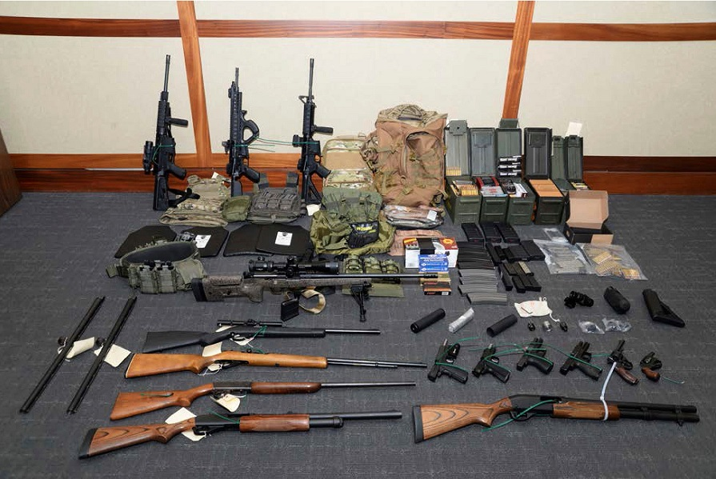
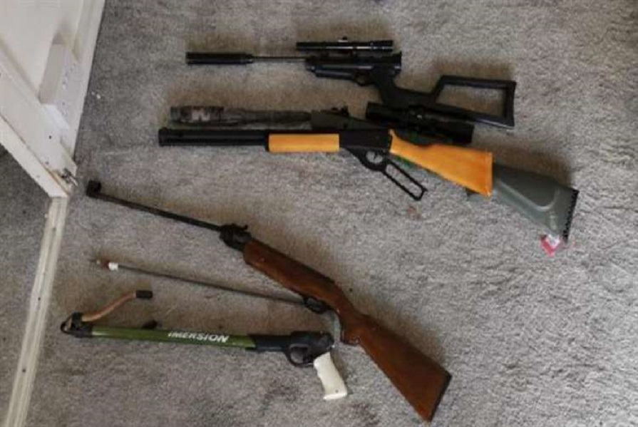
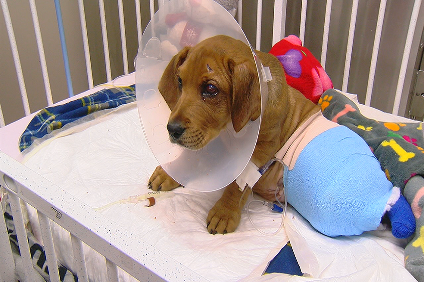
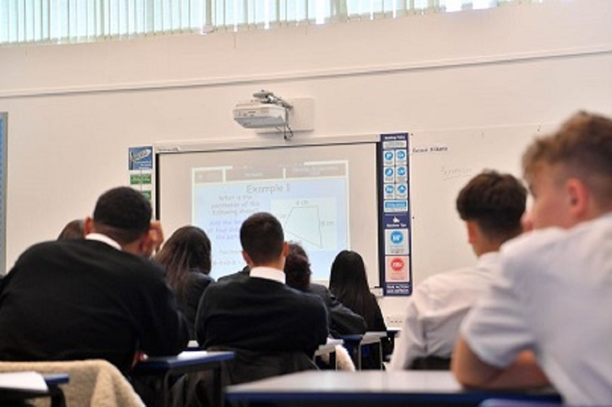
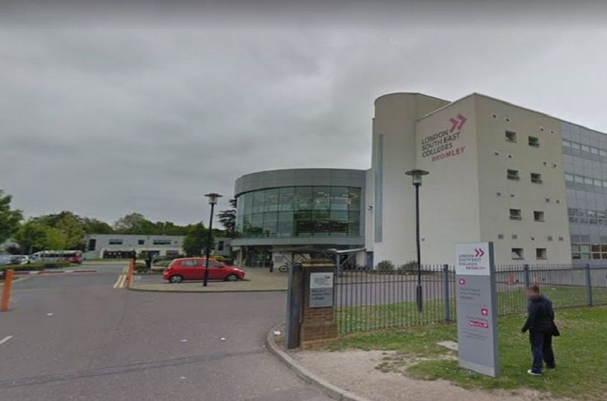

A number of caravans and quad bikes on the site have been identified as stolen, according to police.
Around £112,000 in cash and Class A drugs was also reported to have been recovered.
Officers move in at the scene of the raid (Image: Met Police)
The air weapons will now be tested. Only air weapons that use, or are designed or adapted for use with a self-contained gas cartridge system are prohibited under the Firearms Act.
Seven people have been arrested on suspicion of offences including possession of criminal property, possession of ammunition, handling stolen goods and burglary.
Two people found at the site are being supported by the Met's Modern Slavery Team, the Met said.
A total of 17 dogs were seized from the site, some of which have since been reportedly been identified as stolen.
Commander Kyle Gordon, the Gold Commander for the operation, said: “We have already found a number of weapons and other items of interest following this significant operation, and our searches at the site will continue.
“A firearm seized by police represents a weapon that is not in the hands of someone who might use it to harm others, and commit crime.

Seven people have so far been arrested on suspicion of an array of offences after police discovered drugs, stolen vehicles and an arsenal of weapons including a loaded shotgun, 17 air weapons, CS gas and a machete.
A 27-year-old man arrested on suspicion of possession of drugs and possession of ammunition has now been charged with possession of cannabis, and has been released under investigation for the alleged ammunition offence.
A 30-year-old man arrested on suspicion of burglary has been bailed, while also being charged with being a prohibited person in possession of an air weapon.
No further action will be taken against a 59-year-old man arrested on suspicion of handling stolen goods, while four other people have been bailed until October following their arrest on on suspicion of handling stolen goods, possession of criminal property and possession of prohibited ammunition.
Commander Kyle Gordon, the gold commander for the operation, said: "We have already found a number of weapons and other items of interest following this significant operation, and our searches at the site will continue.
Police have found at least 15 dogs while carrying out a police raid in Orpington, and need the help of Londoners to return them to their owners.
The series of dogs found have been confirmed stolen, or at suspected to be.
There appears to be a mixture of both puppies and adult dogs, all of a wide range of breeds.
In the early hours of last Wednesday officers from the Met’s South Area BCU recovered 24 dogs from a site in Orpington following an early morning warrant.
An additional 25 dogs have since been seized from the site during ongoing searches.
Officers now believe that some of these dogs have been stolen and are looking to reunite them with their rightful owners, however this is proving difficult as most of the dogs have not been microchipped, meaning officers are not able to contact the owners.
Officers also suspect they have uncovered an unlicensed puppy breeding operating at the site.
Police are working closely with Bromley council, which has started an investigation into offences under breeding regulations.
Inspector Paddy O’Hara, from the Met’s Dog Unit, said: “It’s really important for dog owners to microchip their dogs, so that if, in the unfortunate circumstance they are stolen, we can return them to you as quickly as possible if they are recovered.”

On Thursday, an appeal issued across Bromley MPS social media accounts to reunite these dogs with owners reached almost one million people – the post also highlighted the importance of ensuring dogs are microchipped.
One of the dogs has since been reunited with its owner after being missing for six months.
Insp O’Hara added: “We are urging dog owners to ensure their pets are microchipped to help alleviate unnecessary strain on animal charities and local authorities, and to protect the welfare of dogs by promoting responsible ownership.
“A microchip is a small electronic chip, around the size of a grain of rice, which is implanted under the dog’s skin and contains a unique number that can be read by a scanner.
“Your contact details relating to each number are logged on a central database, so should your dog ever go missing or be stolen it can be scanned by the authorities and returned to its owner swiftly and safely.”
In line with government legislation, it is a legal requirement to ensure your dog is microchipped by the time it is eight weeks old – not doing so could lead to a fine of up to £500.
Owners are able to get their dog microchipped for free at any of the 18 Dogs Trust centres across the UK, and free microchips are available at most veterinary surgeries.
Police would also urge potential puppy buyers to check the credibility of their breeders prior to purchasing.
It is important people do their research so they know their new pet has come from a responsible seller.

Several schools in London have had either staff or children test positive for coronavirus since returning for the new academic year.
Since reopening, schools in Bromley, Croydon, Hounslow, Sydenham and Wandsworth have had at least one positive Covid-19 test.
It means many pupils and teachers are now self-isolating, as is Government protocol.
In some instances children went and got a test after feeling unwell, while others have returned positive tests despite not showing any symptoms at all.
Below are all the schools in London where a child or staff member tested positive for coronavirus, as reported by MyLondon.
Heston Community School said there had been a 'confirmed case of Covid-19 within the school'.
The school has sent home one tutor group to self-isolate 'as a precautionary measure' but will remain open for everyone else.
In a letter on its website the school said: "Our cleaning team is undertaking a deep clean of the zone and the classrooms the group has been based in, as a further precautionary measure. The school remains open for all year groups.
"Providing your child remains well, they can continue to attend school as normal. We will keep this under review and will provide updates if required."
A confirmed coronavirus case at a Croydon primary school prompted deep cleaning with multiple staff self-isolating.
A staff member at Ridgeway Primary School and Nursery in South Croydon tested positive on Saturday (September 5) - a couple of days before pupils returned for the new academic year.
The infected person was at the school prior to becoming symptomatic on Thursday, September 3 for a staff training day ahead of children returning to class on Monday (September 7).
According to the co-headteachers the school has liaised with Public Health England and has been deep cleaned.
They said: "Our parents are fully aware of the positive case and have been very supportive."
Staff members who were in "direct contact or proximity contact" with the infected person are self-isolating for 14 days.

Bromley College has been deep cleaned after a staff member tested positive for coronavirus - though students have been told to still attend.
London South East Colleges confirmed that the case was confirmed as a member of staff at its Bromley campus.
According to the college, no student has been affected by this development.
The college also added that extra measures have been brought in to ensure the safety of students.
A London South East Colleges spokesperson said: "We are working with Public Health England and following all guidance necessary to ensure the College environment is as safe as possible – including deep cleaning and self-isolation of staff who have come into close contact with the individual."
A person at a school in Bromley tested positive for coronavirus during routine testing for the Government.
Red Hill Primary School, in Chislehurst, confirmed an individual at the school has coronavirus and that everyone who was considered a 'close contact' has been asked to self-isolate for 14 days.
Headteacher Nicola Crockatt said: "We can confirm that an individual tested positive for Covid-19 last week. They were asymptomatic and the individual was undertaking routine testing as part of the National Office of Statistics.
"The school identified all close contacts of the individual who were asked to isolate for 14 days, and were advised to book a test if they began to show symptoms of Covid-19 themselves.
"Home education commenced immediately for the children who are now isolating. We look forward to welcoming them back to school once the isolation period is complete."